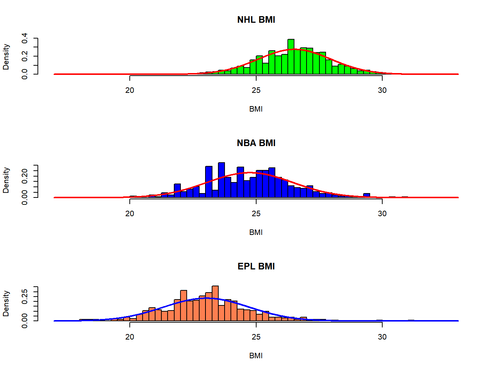
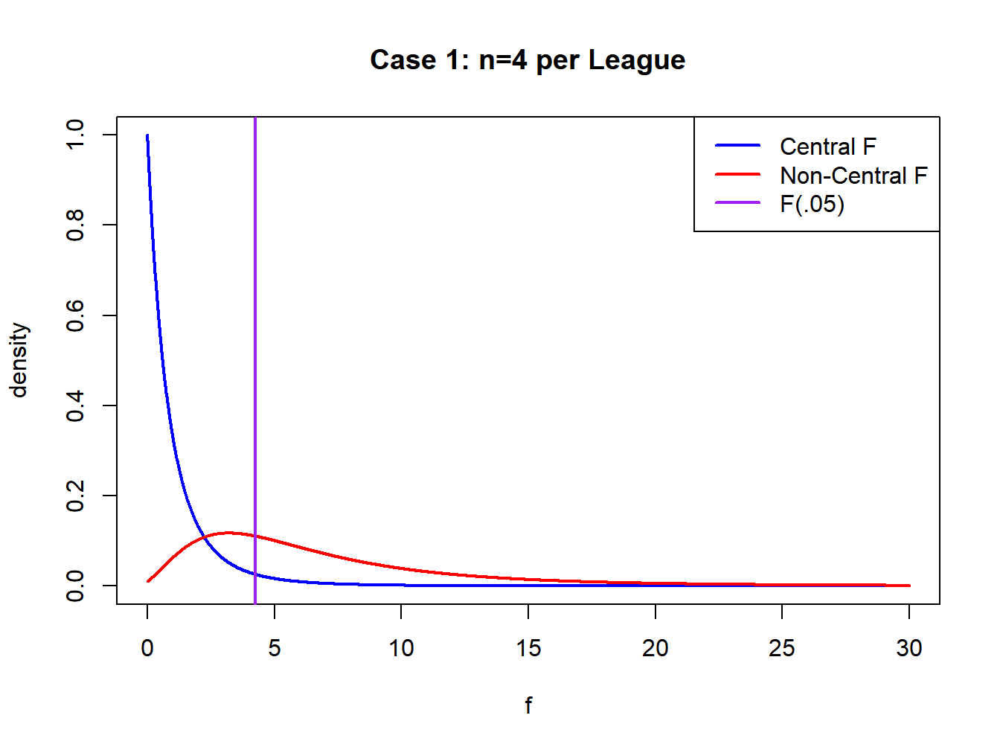
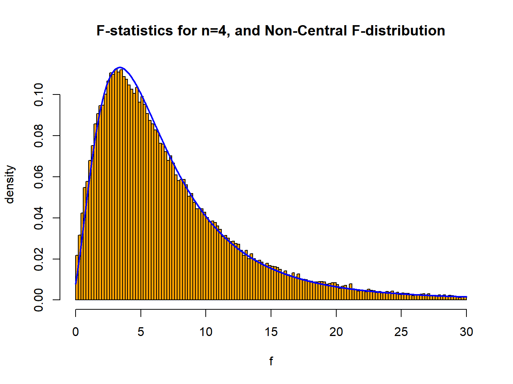
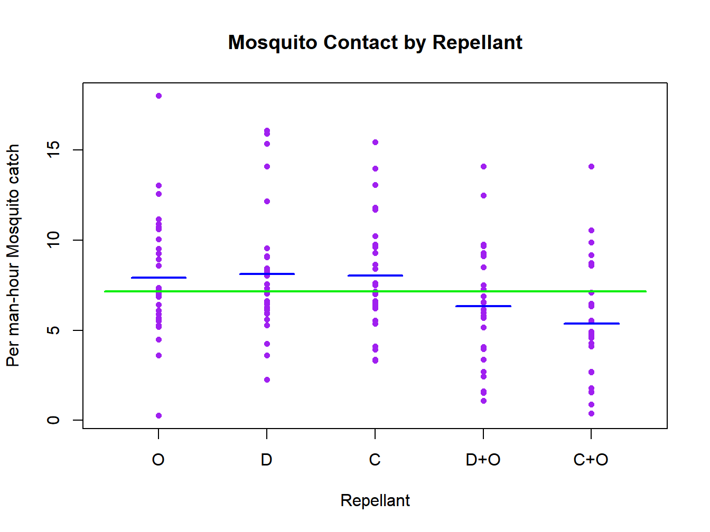
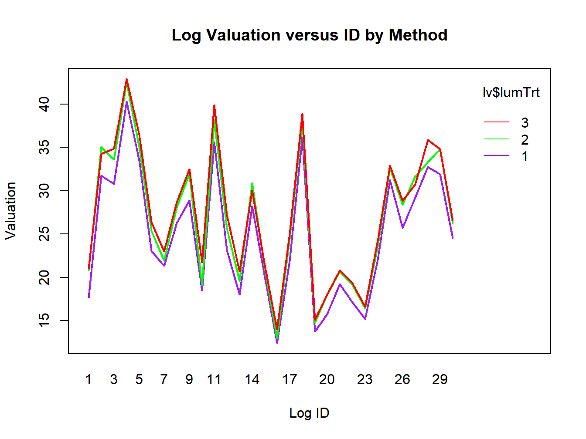
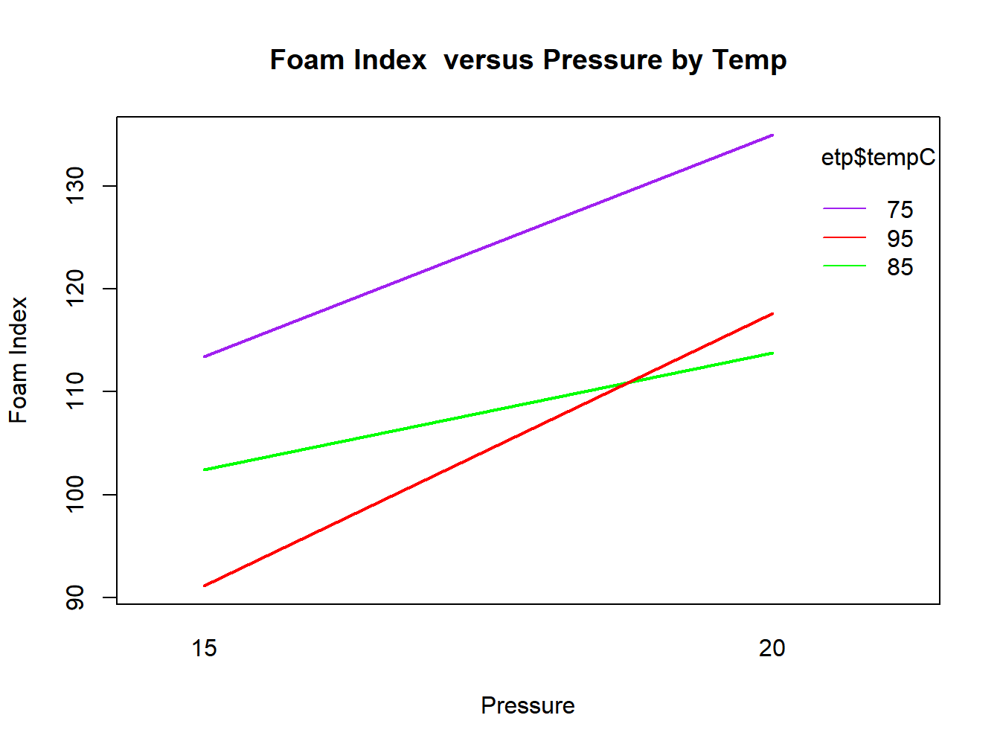

Chapter 7 Experimental Design and the Analysis of Variance
Chapter 6 covered methods to make comparisons between the means of a numeric response variable for two treatments or groups. The cases were considered where the experiment was conducted as an independent samples (aka parallel groups, between subjects) design, as well as a paired (aka crossover, within subjects) design.
This chapter will introduce methods that can be used to compare more than two groups (that is, when the explanatory variable has more than two levels). In this chapter, we will refer to explanatory variable as a factor, and their levels as treatments. The following situations will be covered.
- 1-Treatment Factor, Independent Samples Designs (Completely Randomized Design)
- 1-Treatment Factor, Paired Designs (Randomized Block Design)
- 2-Treatment Factors, Independent Samples Designs (Factorial Design)
In all situations, there will be a numeric response variable, and at least one categorical (or possibly numeric, with several levels) independent variable. The goal will always be to compare mean (or median) responses among several populations. When all factor levels for a factor are included in the experiment, the factor is said to be fixed. When a sample of a larger population of factor levels are included, the factor is said to be random. Only fixed effects designs are considered here.
7.1 Completely Randomized Design (CRD) For Independent Samples
In the Completely Randomized Design, there is one factor that is controlled. This factor has \(k\) levels (which are often treatment groups), and \(n_i\) units are measured for the \(i^{th}\) level of the factor. Observed responses are defined as \(y_{ij}\), representing the measurement on the \(j^{th}\) experimental unit (subject), receiving the \(i^{th}\) treatment. We will write this in model form based on random responses as follows where the factor is fixed (all levels of interest are included in the experiment).
\[ Y_{ij} = \mu + \alpha_i + \epsilon_{ij} = \mu_i + \epsilon_{ij} \quad i=1,\ldots ,k; \quad j=1,\ldots ,n_i \]
Here, \(\mu\) is the overall mean measurement across all treatments, \(\alpha_i\) is the effect of the \(i^{th}\) treatment (\(\mu_i= \mu + \alpha_i\)), and \(\epsilon_{ij}\) is a random error component that has mean 0 and variance \(\sigma^2\). This \(\epsilon_{ij}\) allows for the fact that there will be variation among the measurements of different subjects (units) receiving the same treatment. A common parameterization that has nice properties is to assume \(\sum\alpha_i = 0\).
Of interest to the experimenter is whether or not there is a treatment effect, that is do any of the levels of the treatment provide higher (lower) mean response than other levels. This can be hypothesized symbolically as follows.
\[H_0: \alpha_1 = \alpha_2 = \cdots = \alpha_k = 0 \mbox{ versus } H_A: \mbox{ Not all } \alpha_i = 0 \]
The null hypothesis states that all \(k\) means are equal, while the alternative states that they are not all equal. Note that if \(\alpha_1 = \alpha_2 = \cdots = \alpha_k = 0\) then \(\mu_1=\cdots=\mu_k\).
As with the case where there are two treatments to compare, tests based on the assumption that the \(k\) populations are normal (mound-shaped) will be used, either assuming equal or unequal variances. Also, alternative tests (based on ranks) that do not assume that the \(k\) populations are normal can be used to compare population medians. These are the Kruskal-Wallis Test for the CRD and Friedman’s Test for the RBD. These tests will not be covered in these notes.
7.1.1 Analysis of Variance and \(F\)-Test for Normal Data
When the underlying populations of measurements that are to be compared are approximately normal, with equal variances, the \(F\)-test is appropriate. To conduct this test, partition the total variation in the sample data to variation within and among treatments. This partitioning is referred to as the Analysis of Variance and is an important tool in many statistical procedures. First, we define the following items, based on random outcomes \(Y_{ij}\) where \(i\) indexes treatment and \(j\) represents the replicate number, with \(n_i\) observations for treatment \(i\) and \(N=n_1+\cdots + n_k\). These items include various means, sums of squares (SS), degrees of freedom (df), and mean squares (MS).
\[ Y_{ij} \sim N\left(\mu_i, \sigma\right) \]
\[ \overline{Y}_{i.}=\frac{\sum_{j=1}^{n_i}Y_{ij}}{n_i} \qquad \overline{Y}_{i.} \sim N\left(\mu_i, \frac{\sigma}{\sqrt{n_i}}\right) \]
\[ \overline{Y}_{..}=\frac{\sum_{i=1}^k\sum_{j=1}^{n_i}Y_{ij}}{N} = \frac{\sum_{i=1}^k n_i \overline{Y}_{i.}}{N} \]
\[ \mbox{Total (Corrected) Sum of Squares: } TSS=\sum_{i=1}^k\sum_{j=1}^{n_i}\left(Y_{ij}-\overline{Y}_{..}\right)^2 \qquad df_{\mbox{Tot}}=N-1 \]
\[ \mbox{Between Treatment Sum of Squares: } SST=\sum_{i=1}^k\sum_{j=1}^{n_i}\left(\overline{Y}_{i.}-\overline{Y}_{..}\right)^2 =\sum_{i=1}^k n_i\left(\overline{Y}_{i.}-\overline{Y}_{..}\right)^2 \] \[df_{T}=k-1 \qquad \qquad MST=\frac{SST}{k-1} \]
\[ \mbox{Within Treatment (Error) Sum of Squares: } SSE=\sum_{i=1}^k\sum_{j=1}^{n_i}\left(Y_{ij}-\overline{Y}_{i .}\right)^2 =\sum_{i=1}^k \left(n_i-1\right)S_i^2 \] \[ df_{E}=N-k \qquad \qquad MSE=\frac{SSE}{N-k}\]
Under the null hypothesis of no treatment effects \((\mu_1=\cdots = \mu_k=\mu)\), or equivalently \((\alpha_1=\cdots = \alpha_k=0)\) the following results are obtained, where \(MST\) and \(MSE\) are mean squares for treatments and error, respectively.
\[ E\left\{MST\right\}=E\left\{\frac{SST}{k-1}\right\}=\sigma^2 \qquad E\left\{MSE\right\}=E\left\{\frac{SSE}{N-k}\right\}=\sigma^2 \]
Under the null hypothesis of no treatment effects, \(E\left\{MST\right\}=E\left\{MSE\right\}=\sigma^2\) and the ratio \(MST/MSE\) follows the \(F\)-distribution with \(k-1\) numerator and \(N-k\) denominator degrees of freedom. When the null is not true and not all \(\alpha_i=0\), then the ratio follows the non-central \(F\)-distribution with parameter \(\lambda\) given below.
\[ \frac{MST}{MSE} \sim F_{\nu_1,\nu_2,\lambda} \qquad \lambda= \frac{\sum_{i=1}^k n_i \alpha_i^2}{\sigma^2} \qquad \nu_1=k-1 \qquad \nu_2=N-k \]
Once samples have been obtained and the \(y_{ij}\) are observed, the \(F\)-test is conducted as follows.
\[\overline{y}_{i.} = \frac{\sum_{j=1}^{n_i}y_{ij}}{n_i} \qquad s_i = \sqrt{\frac{\sum_{j=1}^{n_i} (y_{ij}-\overline{y}_{i.})^2}{n_i-1}} \qquad N =n_1 + \cdots + n_k \qquad \overline{y}_{..} = \frac{\sum_{i=1}^k \sum_{j=1}^{n_i}y_{ij}}{N} \] \[TSS=\sum_{i=1}^k \sum_{j=1}^{n_i} \left(y_{ij} - \overline{y}_{..} \right)^2 \qquad SST =\sum_{i=1}^k n_i\left(\overline{y}_{i.} - \overline{y}_{..} \right)^2 \qquad SSE = \sum_{i=1}^k (n_i -1) s_i^2 \]
Here, \(\overline{y}_{i.}\) and \(s_i\) are the mean and standard deviation of measurements in the \(i^{th}\) treatment group, and \(\overline{y}_{..}\) and \(N\) are the overall mean and total number of all measurements. \(TSS\) is the total variability in the data (ignoring treatments), \(SST\) measures the variability in the sample means among the treatments (weighted by the sample sizes), and \(SSE\) measures the variability within the treatments.
Note that the goal is to determine whether or not the population means differ. If they do, we would expect \(SST\) to be large, since that sum of squares is measuring differences in the sample means. A test for treatment effects is conducted after constructing an Analysis of Variance table, as shown in Table 7.1. In that table, there are sums of squares for treatments (\(SST\)), for error (\(SSE\)), and total (\(TSS\)). Also, there are degrees of freedom, which represent the number of “independent” terms in the sum of squares. Then, the mean squares, are sums of squares divided by their degrees of freedom. Finally, the \(F\)–statistic is computed as \(F=MST/MSE\). This will serve as the test statistic. Note that \(MSE\) is an extension of the pooled variance computed in Chapter 6 for two groups, and often it is written as \(MSE=s^2\).
| Source | Degrees of Freedom | Sum of Squares | Mean Square | \(F_{obs}\) |
|---|---|---|---|---|
| Treatments | k-1 | SST | MST=SST/(k-1) | F=MST/MSE |
| Error | N-k | SSE | MSE=SSE/(N-k) | |
| Total | N-1 | TSS |
The formal method of testing this hypothesis is as follows.
- \(H_0: \alpha _1 = \cdots = \alpha_k = 0 \quad (\mu_1 = \cdots = \mu_k)\) (No treatment effect)
- \(H_A: \mbox{ Not all } \alpha_i\) are 0 (Treatment effects exist)
- T.S. \(F_{obs} = \frac{MST}{MSE}\)
- R.R.: \(F_{obs} \geq F_{\alpha, k-1,N-k}\)
- p-value: \(P=P(F_{k-1, N-k} \geq F_{obs})\)
Example 7.1: Body Mass Indices of NHL, NBA, and EPL, Players
Consider an extension of the Body Mass Index analysis to include National Basketball Association players. The populations are NHL (\(i=1\)), NBA (\(i=2\)), and EPL (\(i=3\)). Histograms for the three populations are given in Figure 7.1. The population sizes, means, and standard deviations are given in Table 7.2.

Figure 7.1: Distributions of Body Mass Index for NHL, NBA, and EPL players
| \(N\) | \(\mu\) | \(\sigma\) | |
|---|---|---|---|
| NHL BMI | 748 | 26.514 | 1.449 |
| NBA BMI | 505 | 24.741 | 1.718 |
| EPL BMI | 526 | 23.019 | 1.711 |
\[ N_1=748 \quad N_2=505 \quad N_3=526 \qquad \mu_1=26.514 \quad \mu_2=24.741 \quad \mu_3=23.019 \] \[\sigma_1=1.449 \quad \sigma_2=1.718 \quad \sigma_3=1.711 \]
While the population standard deviations (and thus variances) are not all equal, a “pooled” (unweighted) variance is used for computational purposes. Also, the unweighted mean \(\mu\) and \(\alpha_i\) are computed.
\[ \sigma^2 = \frac{1.449^2+1.718^2+1.711^2}{3}=2.660 \] \[\mu=\frac{26.514+24.741+23.019}{3}=24.758 \qquad \alpha_1=26.514-24.758=1.756 \] \[ \alpha_2=24.741-24.758=-0.017 \qquad \alpha_3=23.019-24.758=-1.739 \]
Note that these \(\alpha_i\) are obtained under the assumption \(\sum \alpha_i=0\). If samples of sizes \(n_1=n_2=n_3=4\) and \(n_1=n_2=n_3=12\) are taken, the following \(F\)-distributions for the ratio \(MST/MSE\) are obtained.
\[ n_i=4: \quad \frac{MST}{MSE} \sim F_{\nu_1,\nu_2,\lambda_1} \quad \lambda_1= \frac{4\left(1.756^2+(-0.017)^2+(-1.739)^2\right)}{2.660}=9.185 \] \[\nu_1=3-1=2 \qquad \qquad \nu_2=12-3=9\]
\[ n_i=12: \quad \frac{MST}{MSE} \sim F_{\nu_1,\nu_2,\lambda_2} \quad \lambda_2= \frac{12\left(1.756^2+(-0.017)^2+(-1.739)^2\right)}{2.660}=27.555 \] \[ \nu_1=3-1=2 \qquad \qquad \nu_2=36-3=33\]
When \(n_1=n_2=n_3=4\), the critical value for testing \(H_0:\alpha_1=\alpha_2=\alpha_3=0\) at \(\alpha=0.05\) significance level is \(F_{.05,2,9}=4.256\).
The power of the \(F\)-test
under this configuration is \(\pi_1=.622\).
When \(n_1=n_2=n_3=12\), the critical value for testing \(H_0:\alpha_1=\alpha_2=\alpha_3=0\) at \(\alpha=0.05\) significance level is \(F_{.05,2,33}=3.285\).
The power of the \(F\)-test
under this configuration is \(\pi_2=.997\).
The central \(F\)-density and the non-central \(F\)-density with sample sizes \(n_1=n_2=n_3=4\), \(\lambda_1=9.48\)
for the denominator degrees of freedom \(\nu_2=9\) is given in
Figure 7.2.

Figure 7.2: Central (Blue) and non-central (red) \(F\)-distributions for Body Mass Index example with n=4
Now we will take 100000 samples on \(n=4\) and \(n=12\) players from each league, and conduct the \(F\)-test of equal population means. We will compare the empirical and theoretical power for each case and compare the distributions of the observed and theoretical \(F\)-statistics.
## ybar(n=4) ybar(n=12) sd(n=4) sd(n=12)
## NHL-sample 1 26.489 25.938 2.146 1.972
## NBA-sample 1 23.840 24.635 1.484 2.446
## EPL-sample 1 25.460 22.940 2.976 2.068
Figure 7.3: Observed and Theoretical Distributions of the F-statistic for testing equality of mean Body Mass Index for NHL, NBA, and EPL players, with n1=n2=n3=4
| \(\mu\) | \(\sigma\) | \(\bar{\bar{y}}\) \((n=4)\) | \(s_{\bar{y}}\) \((n=4)\) | \(\bar{\bar{y}}\) \((n=12)\) | \(s_{\bar{y}}\) \((n=12)\) | |
|---|---|---|---|---|---|---|
| NHL | 26.514 | 1.449 | 26.511 | 0.724 | 26.512 | 0.415 |
| NBA | 24.741 | 1.718 | 24.738 | 0.856 | 24.741 | 0.490 |
| EPL | 23.019 | 1.711 | 23.021 | 0.854 | 23.016 | 0.489 |
The distributions of the sample means for each league and the two sample sizes are summarized in Table 7.3.
Based on 100000 random samples of size \(n_i=4\) from each league, the \(F\)-test rejected the null hypothesis of no league differences in 63.98% of the samples. With samples of size \(n_i=12\), 99.45% of the \(F\)-tests rejected the null hypothesis. Despite the fact that the populations of measurements are not exactly normally distributed with equal variances, the test performs as expected, see Figure 7.3. Computations for the first samples of size \(n_1=n_2=n_3=12\) are given below.
\[ \overline{y}_{1.}=25.938 \quad \overline{y}_{2.}=24.635 \quad \overline{y}_{3.}=22.940 \quad \overline{y}_{..}=24.504 \qquad s_1=1.972 \quad s_2=2.446 \quad s_3=2.068 \]
\[ SST=12\left[(25.938-24.504)^2 + (24.635-24.504)^2 + (22.940-24.504)^2\right] = 54.235 \] \[ df_T=3-1=2 \qquad MST=\frac{54.235}{2}=27.118 \]
\[ SSE = (12-1)\left[1.972^2 + 2.446^2 + 2.068^2 \right] = 155.632 \] \[ df_E=3(12)-3=33 \quad MSE=\frac{155.632}{33}=4.716 \]
\[ H_0:\mu_1=\mu_2=\mu_3 \qquad \mbox{TS: } F_{obs}=\frac{27.118}{4.716}=5.75 \] \[\mbox{RR: } F_{obs} \geq 3.285 \quad P=P\left(F_{2,33} \geq 5.75\right) =.0072 \]
\[ \nabla \]
Example 7.2: Comparison of 5 Mosquito Repellents
A study compared \(k=5\) mosquito repellent patches on fabric for soldiers in military operations (Bhatnagar and Mehta 2007). The 5 treatments were: Odomos (1), Deltamethrin (2), Cyfluthrin (3), Deltamethrin+Odomos (4), and Cyfluthrin+Odomos (5), with \(n_i=30\) subjects per treatment, and a total of \(N=150\) measurements. The response observed was the ``Per Man-Hour Mosquito Catch.’’ Sample statistics are given in Table 7.4, and the Analysis of Variance is given in Table 7.5. Data that have been generated to match the means and standard deviations are plotted in Figure 7.4. The overall mean (long line) and individual treatment means (short lines) are included.
| Treatment (\(i\)) | \(n\) | \(\bar{y}_i\) | \(s_i\) |
|---|---|---|---|
| Odomos (1) | 30 | 7.900 | 3.367 |
| Deltamethrin (2) | 30 | 8.133 | 3.461 |
| Cyfluthrin (3) | 30 | 8.033 | 3.011 |
| D+O (4) | 30 | 6.333 | 3.122 |
| C+O (5) | 30 | 5.367 | 3.068 |
| Source | df | SS | MS | \(F_{obs}\) | \(F_{.05,4,145}\) | \(P(F_{4,145}>F_{obs})\) |
|---|---|---|---|---|---|---|
| Treatments | 4 | 184.560 | 46.163 | 4.478 | 2.434 | 0.002 |
| Error | 145 | 1494.680 | 10.308 | |||
| Total | 149 | 1679.334 |
## trt.mosq y.mosq
## 1 1 4.50
## 2 1 10.04
## 3 1 13.05
## 4 1 0.26
## 5 1 10.61
## 6 1 10.89
Figure 7.4: Mosquito catch by repellent treatment - data generated to match treatment means and standard deviations
## Analysis of Variance Table
##
## Response: y.mosq
## Df Sum Sq Mean Sq F value Pr(>F)
## factor(trt.mosq) 4 184.65 46.162 4.4798 0.001924 **
## Residuals 145 1494.15 10.304
## ---
## Signif. codes: 0 '***' 0.001 '**' 0.01 '*' 0.05 '.' 0.1 ' ' 1- \(H_0: \alpha_1 = \alpha_2 = \alpha_3 = \alpha_4=\alpha_5= 0 \quad (\mu_1 = \mu_2 = \mu_3=\mu_4=\mu_5)\) (No treatment effect)
- \(H_A: \mbox{ Not all } \alpha_i\) are 0 (Treatment effects exist)
- T.S. \(F_{obs} = \frac{MST}{MSE}=4.478\)
- R.R.: \(F_{obs} > F_{\alpha, k-1, n-k}=F_{0.05,4,145}=2.434\)
- p-value: \(P=P(F_{k-1,N-k} \geq F_{obs})=P(F_{4,145}\geq 4.478)=.0019\)
Since the \(F\)-statistic is sufficiently large, conclude that the means differ, then the following methods can used to make comparisons among treatments.
\[ \nabla \]
7.1.2 Comparisons among Treatment Means
Assuming that it has been concluded that treatment means differ, we generally would like to know which means are significantly different. This is generally done by making contrasts among treatments. Special cases of contrasts include pre-planned or all pairwise comparisons between pairs of treatments.
A contrast is a linear function of treatment means, where the coefficients sum to 0. A contrast among population means can be estimated with the same contrast among sample means, and inferences can be made based on the sampling distribution of the contrast. Let \(C\) be the contrast among the population means, and \(\hat{C}\) be its estimator based on means of the independent random samples.
\[ C= a_1\mu_1 + \cdots + a_k\mu_k = \sum_{i=1}^k a_i \mu_i \mbox{ where } \sum_{i=1}^k a_i = 0 \qquad \hat{C} = a_1\overline{Y}_{1.} + \cdots + a_k\overline{Y}_{k.} = \sum_{i=1}^k a_i \overline{Y}_{i.} \] \[ V\{\hat{C}\} = \sigma^2\left[\frac{a_1^2}{n_1} + \cdots + \frac{a_k^2}{n_k}\right] = \sigma^2 \sum_{i=1}^k \frac{a_i^2}{n_i} \]
When the sample sizes are balanced (all \(n_i\) are equal), the formula for the variance clearly simplifies. Contrasts are specific to particular research questions, so the general rules for tests and Confidence Intervals are given here, followed by an application to the Mosquito Repellent study. Since the coefficients sum to 0, we are virtually always testing \(H_0: C=0\) in practice.
Once samples are obtained, obtain \(\hat{c}\), the contrast based on the observed sample means among the treatments.
\[ \hat{c} = a_1\overline{y}_{1.}+ \cdots + a_k\overline{y}_{k.}=\sum_{i=1}^k a_i\overline{y}_{i.} \qquad \widehat{SE}\{\hat{C}\}=\sqrt{MSE \sum_{i=1}^k \frac{a_i^2}{n_i}} \]
Testing whether a contrast is equal to 0 and obtaining a \((1-\alpha)100\%\) Confidence Interval for \(C\) are done as follow.
\[ H_0: C=0 \quad H_A: C\neq 0 \quad \mbox{TS: } t_C = \frac{\hat{c}}{\widehat{SE}\{\hat{C}\}} \quad \mbox{RR: } |t_C| \geq t_{\alpha/2,N-k} \quad P=2P\left(t_{N-k} \geq |t_C|\right) \]
\[ (1-\alpha)100\% \mbox{ Confidence Interval for } C: \qquad \hat{c} \pm t_{\alpha/2,N-k} \widehat{SE}\{\hat{C}\} \]
The test can be conducted as upper or lower-tailed with obvious adjustments. An alternative approach is to compute the sums of squares for the contrast \(SSC\), and use an \(F\)-test, comparing its Mean Square to \(MSE\).
\[ SSC=\frac{\left(\hat{c}\right)^2}{\sum_{i=1}^k \frac{a_i^2}{n_i}} \qquad df_C=1 \qquad MSC=\frac{SSC}{1}=SSC \]
\[ H_0: C=0 \qquad H_A: C\neq 0 \qquad \mbox{TS: } F_C=\frac{MSC}{MSE} \] \[ \mbox{RR: } F_C \geq F_{\alpha,1,N-k} \qquad \qquad P=P\left(F_{1,N-k} \geq F_C \right) \]
Example 7.3: Comparison of 5 Mosquito Repellents - Contrasts 1 and 2
Suppose the researchers are interested in comparing the two treatments that use Deltamethrin (2 and 4) with the two treatments that use Cyfluthrin (3 and 5). Then, the following calculations are made.
\[ C_1 = \left(\mu_2+\mu_4\right) - \left(\mu_3+\mu_5\right) \qquad a_1=0 \quad a_2=a_4=1 \quad a_3=a_5=-1 \qquad n_{i}=30 \qquad MSE=10.308\]
\[ \overline{y}_{2.}=8.133 \quad \overline{y}_{4.}=6.333 \quad \overline{y}_{3.}= 8.033 \quad \overline{y}_{5.}= 5.367 \qquad \hat{c}_1 = (8.133+6.333)-(8.033+5.367)=1.066 \]
\[ \widehat{SE}\{\hat{C}_1\} = \sqrt{10.308\left(\frac{0^2+1^2+(-1)^2+1^2+(-1)^2}{30}\right)}=1.172 \]
For a test (\(\alpha=0.05\)) of \(H_0:C_1=0\), the test statistic, rejection region and p-value, along with a 95% Confidence Interval for \(C\) are given below.
\[ \mbox{TS: } t_{C_1} = \frac{1.066}{1.172} = 0.910 \quad \mbox{RR: } |t_{C_1}| \geq t_{.025,145}=1.976 \quad P=2P\left(t_{145} \geq |0.910|\right)=.364 \]
\[ \mbox{95}\% \mbox{ CI for } C: 1.066 \pm 1.976(1.172) \equiv 1.066 \pm 2.316 \equiv (-1.250,3.382) \]
There is no evidence of any difference between the effects of these two types of repellents. Next, we conduct the \(F\)-test, knowing in advance that its conclusion and p-value will be equivalent to 2-tailed \(t\)-test performed above (the only difference due to rounding is in third decimal place).
\[ SSC_1=\frac{1.066^2}{\frac{4}{30}} = 8.523 = MSC_1 \quad \mbox{TS: } F_{C_1}=\frac{8.523}{10.308}=0.827 \] \[\mbox{RR: } F_{C_1}\geq F_{.05,1,145}=3.906 \qquad P = P\left(F_{1,145} \geq 0.827 \right) = .3647\] \[ P=P\left(F_{1,145}\geq 0.827\right)=.365 \]
For a second contrast \((C_2)\), without going through all calculations, consider comparing Deltamethrin and Cyfluthrin (each without Odomos: 2 and 3) with Deltamethrin and Cyfluthrin (each with Odomos: 4 and 5). This involves: \(a_1=0,a_2=a_3=1,a_4=a_5=-1\). Note that the standard error of the contrast will be exactly the same as that for contrast \(\hat{c}_1\).
\[ \hat{c}_2 = 4.466 \quad TS:t_{C_2}=\frac{4.466}{1.172}=3.811 \quad P=2P\left(t_{145}\geq|3.811|\right)=.0002 \qquad \mbox{95}\% \mbox{ CI: } 4.466\pm 2.316 \equiv(2.150,6.782) \]
There is evidence that the combined mean is higher without Odomos than with Odomos. Since low values are better (mosquito contacts), Odomos as an additive to the two chemicals (individually) is better than no additive to the two chemicals individually. The \(F\)-test is given below. The R code that follows extends the calculations made in Example 7.2.
\[ SSC_2=\frac{4.466^2}{\frac{4}{30}} = 149.59 \quad \mbox{TS: } F_{C_2}=\frac{149.59}{10.308}=14.51 \quad P=P\left(F_{1,145}\geq 14.51\right)=.0005 \]
## Estimate Std Err t_obs P(>|t_{obs}|) SS F_obs P(>F_obs)
## C1: (D,DO)-(C,CO) 1.067 1.172 0.91 0.364 8.533 0.828 0.364
## C2: (D,C)-(DO,CO) 4.465 1.172 3.81 0.000 149.544 14.513 0.000
## LB UB
## C1: (D,DO)-(C,CO) -1.250 3.383
## C2: (D,C)-(DO,CO) 2.149 6.782\[ \nabla \]
A special class of contrasts are orthogonal contrasts. Two contrasts are orthogonal if the sum of the products of their \(a_i\) coefficients, divided by the sample sizes \(n_i\), is 0. This concept is shown below.
\[ C_1 =\sum_{i=1}^k a_{1i}\mu_i \qquad C_2 =\sum_{i=1}^k a_{2i}\mu_i \quad \mbox{$C_1$ and $C_2$ are orthogonal if } \quad \sum_{i=1}^k \frac{a_{1i}a_{2i}}{n_i}=0 \]
Note that if the sample sizes are all equal (balanced design), this simplifies to \(\sum_{i=1}^ka_{1i}a_{2i}=0\). The two contrasts in Example 7.3 are orthogonal (check this). If there are \(k\) treatments, and \(k-1\) degrees of freedom for Treatments, any \(k-1\) pairwise orthogonal contrasts’ sums of squares will add up to the Treatment sum of squares. That is, \(SST\) can be decomposed into the sums of squares for the \(k-1\) contrasts. The decomposition is not unique, there may be various sets of orthogonal contrasts.
Example 7.4: Comparison of 5 Mosquito Repellents - Orthogonal Contrasts
Consider these two other contrasts.
- (D versus C without O) vs (D versus C with Odomos): \(C_3=\left(\mu_2-\mu_3\right)-\left(\mu_4-\mu_5\right) = \mu_2-\mu_3-\mu_4+\mu_5\)
- Odomos only versus the four other treatments: \(C_4=4\mu_1 - \mu_2 - \mu_3 - \mu_4 - \mu_5\)
The following R code chunk gives the contrast coefficients for these four contrasts. For all six pairs, \(\sum_{i=1}^k a_{ji} a_{j'i} =0\), \(j\neq j'\). Also given are the estimates, standard errors, \(t\)-tests, 95% Confidence Intervals, Sums of Squares and \(F\)-statistics.
## a1 a2 a3 a4 a1a2 a1a3 a1a4 a2a3 a2a4 a3a4
## O 0 0 0 4 0 0 0 0 0 0
## D 1 1 1 -1 1 1 -1 1 -1 -1
## C -1 1 -1 -1 -1 1 1 -1 -1 1
## DO 1 -1 -1 -1 -1 -1 -1 1 1 1
## CO -1 -1 1 -1 1 -1 1 -1 1 -1
## sum 0 0 0 0 0 0 0 0 0 0## Estimate Std Err t_obs P(>|t_{obs}|) SS F_obs
## C1: (D,DO)-(C,CO) 1.067 1.172 0.910 0.364 8.533 0.828
## C2: (D,C)-(DO,CO) 4.465 1.172 3.810 0.000 149.544 14.513
## C3: (D-C) - (DO-CO) -0.866 1.172 -0.739 0.461 5.625 0.546
## C4: 4O-(D,C,DO,CO) 3.737 2.621 1.426 0.156 20.944 2.033
## P(>F_obs) LB UB
## C1: (D,DO)-(C,CO) 0.364 -1.250 3.383
## C2: (D,C)-(DO,CO) 0.000 2.149 6.782
## C3: (D-C) - (DO-CO) 0.461 -3.183 1.451
## C4: 4O-(D,C,DO,CO) 0.156 -1.444 8.917From the original Analysis of Variance table, see that the Treatment sum of squares is \(SST=184.65\). As these four contrasts are pairwise orthogonal, their sums of squares add up to \(SST\): \(8.533+149.544+5.625+20.944=184.646\). Note that virtually all of the differences among the treatments (based on this set of contrasts) is contrast 2, comparing the average of D and C without O versus the average of D and C with O.
\[ \nabla \]
7.1.2.1 Bonferroni Method of Multiple Comparisons
The Bonferroni method is used in many situations and is based on the following premise: If there are \(c\) comparisons or contrasts to be made simultaneously, and we desire to be \(\left(1-\alpha_E\right)100\%\) confident that all are correct, each comparison should be made at a higher level of confidence (lower probability of type I error). If individual comparisons are made at \(\alpha_I=\alpha_E/c\) level of significance, there is an overall error rate no larger than \(\alpha_E\). This method is conservative and can run into difficulties (low power) as the number of comparisons gets very large. The general procedures for simultaneous tests and Confidence Intervals are as follow in terms of comparing various contrasts.
\[ \mbox{Define: } \quad B_{C_j} = t_{\alpha_E/(2c),\nu} \widehat{SE}\left\{\hat{C_j}\right\} \quad j=1,\ldots,c\]
\[ \mbox{Conclude } C_j\neq 0 \mbox{ if } \left|\hat{c_j}\right| \geq B_{C_j} \] \[ \mbox{Simultaneous }\left(1-\alpha_E\right)100\% \mbox{ CI's for } C_j: \quad (\hat{c_j}) \pm B_{C_j} \quad j=1,\ldots,c\]
where \(t_{\alpha_E /(2c),\nu}\), with \(\nu\) being the error degrees of freedom, \(\nu=N-k\) for the Completely Randomized Design, is obtained from the Bonferroni \(t\)–table (see chapter powerpoint slides) or from statistical packages or EXCEL.
The Bonferroni adjusted p-value can be computed as the minimum of 1 and \(c\) times the unadjusted p-value.
Example 7.5: Comparison of 5 Mosquito Repellents - Bonferroni CIs for Contrasts
In this example, we will obtain Bonferroni simultaneous Confidence Intervals for the \(c=4\) contrasts considered in Example 7.4. The adjustment involves replacing \(t_{.05/2,N-k}=1.976\) with \(t_{.05/(2(4)),N-k}=2.529\). Recall that the estimated standard errors for contrasts 1, 2, and 3 are all equal to 1.172 and the standard error for contrast 4 is 2.621. This leads to the following values for \(B_{C_j} \quad j=1,2,3,4\).
\[ B_{C_1}=B_{C_2}=B_{C_3}=2.529(1.172)=2.964 \qquad B_{C_4}=2.529(2.621)=6.629\]
The following R code chunk computes the original 95% CI’s for the contrasts as well as the Bonferroni adjusted 95% CI’s.
## Estimate Std Err t_obs P(>|t_{obs}|) Bon Adj P LB
## C1: (D,DO)-(C,CO) 1.067 1.172 0.910 0.364 1.000 -1.250
## C2: (D,C)-(DO,CO) 4.465 1.172 3.810 0.000 0.001 2.149
## C3: (D-C) - (DO-CO) -0.866 1.172 -0.739 0.461 1.000 -3.183
## C4: 4O-(D,C,DO,CO) 3.737 2.621 1.426 0.156 0.624 -1.444
## UB Bon LB Bon UB
## C1: (D,DO)-(C,CO) 3.383 -1.898 4.031
## C2: (D,C)-(DO,CO) 6.782 1.501 7.430
## C3: (D-C) - (DO-CO) 1.451 -3.831 2.099
## C4: 4O-(D,C,DO,CO) 8.917 -2.892 10.366Note that the Bonferroni simultaneous Confidence Intervals are wider than the unadjuted ones, and the adjusted p-values are higher, but Contrast 2 is still significant.
\[ \nabla \]
7.1.2.2 Tukey Method for All Pairwise Comparisons
Various methods have been developed to handle all possible pairwise comparisons among treatment means and keep the overall error rate at \(\alpha_E\), including the widely reported Bonferroni procedure described above. Note that pairwise comparisons are a special class of contrasts where one \(\alpha_i=1\), one \(\alpha_i=-1\) and the remaining \(k-2 \hspace{0.1in} \alpha_i=0\). When there are \(k\) treatments, there are \(k(k-1)/2\) pairs of treatments that can be compared (combinations from Chapter 3).
One commonly used procedure is Tukey’s Honest Significant Difference (HSD) method, which is more powerful than the Bonferroni method (but more limited in its applicability). Statistical computer packages can make these comparisons automatically. Tukey’s method can be used for tests and confidence intervals for all pairs of treatment means simultaneously. If there are \(k\) treatments, their will be \(\frac{k(k-1)}{2}\) such tests or intervals. The general forms, allowing for different sample sizes for treatments \(i\) and \(i'\) are as follow (the unequal sample size case is referred to as the “Tukey-Kramer” method). The procedure makes use of the Studentized Range Distribution with critical values, \(q_{\alpha_E,k,\nu}\), indexed by the number of treatments \((k)\) and error degrees of freedom \(\nu = N-k\) for the Completely Randomized Design. The R functions qtukey and ptukey give quantiles and probabilities for the distribution. A table of critical values for \(\alpha_E=0.05\) is given in this chapter’s powerpoint slides.
\[ \mbox{Define: } \quad HSD_{ii'} = \frac{q_{\alpha_E,k, \nu}}{2} \widehat{SE}\{\overline{Y}_{i.} - \overline{Y}_{i'.}\} = \frac{q_{\alpha_E,k, \nu}}{2} \sqrt{MSE \left(\frac{1}{n_i} + \frac{1}{n_{i'}}\right)} \quad i\neq i' \]
\[ \mbox{Conclude } \mu_i \neq \mu_{i'} \quad \mbox{ if } \quad \left|\overline{y}_{i.}-\overline{y}_{i'.}\right| \geq HSD_{ii'} \] \[ \mbox{Simultaneous }\left(1-\alpha_E\right)100\% \mbox{ CI's for } \mu_i-\mu_{i'}: \quad \left(\overline{y}_{i.} - \overline{y}_{i'.}\right) \pm HSD_{ii'} \]
When the sample sizes are equal (\(n_i=n_{i'}\)), the formula for \(HSD_{ii'}\) can be simplified as follows.
\[ HSD_{ii'} = q_{\alpha_E,k, \nu} \sqrt{MSE \left(\frac{1}{n_i}\right)} \quad i<i' \]
Example 7.6: Comparison of 5 Mosquito Repellents
The Bonferroni and Tukey methods are used to obtain simultaneous 95% CI’s for each difference in mean mosquito contacts. The general form for the Bonferroni simultaneous 95% CI’s (with \(c=5(4)/2=10\) and \(\nu=150-5=145)\)) is given below. Recall that \(MSE=10.308\) and \(n_i=30\) for each treatment.
\[ B_{ii'} = t_{.05/(2(10)),145} \sqrt{10.308 \left(\frac{1}{30} + \frac{1}{30}\right)} = 2.851(0.829)=2.363 \] \[\mbox{Simultaneous }95\% \mbox{ CIs: } \quad \left(\overline{y}_{i.} - \overline{y}_{i'.}\right) \pm 2.363\]
For Tukey’s method, the confidence intervals are of the following form.
\[ HSD_{ii'}=q_{0.05, 5, 145}\sqrt{10.308\left(\frac{1}{30}\right)} = 3.907(0.586) = 2.290 \] \[ \qquad \mbox{Simultaneous } 95\% \mbox{ CIs: } \quad\left(\overline{y}_{i.} - \overline{y}_{i'.}\right) \pm 2.290\]
The corresponding calculations and confidence intervals are given in in the following R code chunk.
## i i' yb i yb i' diff HSD T LB T UB Bon B B LB B UB
## [1,] 2 1 8.133 7.901 0.232 2.29 -2.057 2.522 2.363 -2.130 2.595
## [2,] 3 1 8.033 7.901 0.132 2.29 -2.158 2.422 2.363 -2.231 2.495
## [3,] 3 2 8.033 8.133 -0.100 2.29 -2.390 2.189 2.363 -2.463 2.262
## [4,] 4 1 6.333 7.901 -1.567 2.29 -3.857 0.722 2.363 -3.930 0.795
## [5,] 4 2 6.333 8.133 -1.800 2.29 -4.089 0.490 2.363 -4.162 0.563
## [6,] 4 3 6.333 8.033 -1.699 2.29 -3.989 0.590 2.363 -4.062 0.663
## [7,] 5 1 5.367 7.901 -2.534 2.29 -4.823 -0.244 2.363 -4.896 -0.171
## [8,] 5 2 5.367 8.133 -2.766 2.29 -5.056 -0.476 2.363 -5.129 -0.403
## [9,] 5 3 5.367 8.033 -2.666 2.29 -4.955 -0.376 2.363 -5.028 -0.303
## [10,] 5 4 5.367 6.333 -0.966 2.29 -3.256 1.323 2.363 -3.329 1.396## Analysis of Variance Table
##
## Response: y.mosq
## Df Sum Sq Mean Sq F value Pr(>F)
## factor(trt.mosq) 4 184.65 46.162 4.4798 0.001924 **
## Residuals 145 1494.15 10.304
## ---
## Signif. codes: 0 '***' 0.001 '**' 0.01 '*' 0.05 '.' 0.1 ' ' 1## Tukey multiple comparisons of means
## 95% family-wise confidence level
##
## Fit: aov(formula = y.mosq ~ factor(trt.mosq), data = mp)
##
## $`factor(trt.mosq)`
## diff lwr upr p adj
## 2-1 0.2323333 -2.057239 2.5219058 0.9986342
## 3-1 0.1320000 -2.157572 2.4215724 0.9998540
## 4-1 -1.5673333 -3.856906 0.7222391 0.3268078
## 5-1 -2.5336667 -4.823239 -0.2440942 0.0220410
## 3-2 -0.1003333 -2.389906 2.1892391 0.9999510
## 4-2 -1.7996667 -4.089239 0.4899058 0.1965293
## 5-2 -2.7660000 -5.055572 -0.4764276 0.0093589
## 4-3 -1.6993333 -3.988906 0.5902391 0.2476696
## 5-3 -2.6656667 -4.955239 -0.3760942 0.0136686
## 5-4 -0.9663333 -3.255906 1.3232391 0.7707275Based on the intervals in the previous R code chunk, it can be concluded that treatments 1 (Odomos) and 5 (Cyfluthrin + Odomos) are significantly different, as are treatments 2 (Deltamethrin) and 5, and treatments 3 (Cyfluthrin) and 5.
While it is easy to write a function in R to conduct the Bonferroni method, there does not appear an easy “follow up” to the ANOVA that prints out actual Confidence Intervals (in base R, anyway). There is an easy one for Tukey’s honest significant difference method, the TukeyHSD function (see above). Note that R takes the mean with the higher subscript minus the mean with the lower subscript.
\[ \nabla \]
7.2 Randomized Block Design (RBD) For Studies Based on Matched Units
In crossover designs (aka within subjects designs), each unit or subject receives each treatment. In these cases, units are referred to as blocks. In other studies, units or subjects may be matched based on external criteria. The notation for the Randomized Block Design (RBD) is very similar to that of the CRD, with additional elements. The model we are assuming here is written as follows.
\[ Y_{ij} = \mu + \alpha_i + \beta_j + \epsilon_{ij} = \mu_i +\beta_j +\epsilon_{ij} \quad i=1,\ldots,k; \quad j=1,\ldots,b \]
Here, \(\mu\) represents the overall mean measurement, \(\alpha_i\) is the (fixed) effect of the \(i^{th}\) treatment, \(\beta_j\) is the (typically random) effect of the \(j^{th}\) block, and \(\epsilon_{ij}\) is a random error component that can be thought of as the variation in measurements if the same experimental unit received the same treatment repeatedly. Note that just as before, \(\mu_i\) represents the mean measurement for the \(i^{th}\) treatment (across all blocks). The general situation will consist of an experiment with \(k\) treatments being received by each of \(b\) blocks. Blocks can be fixed or random, typically they are random.
When the (random) block effects (\(\beta_j\)) and random error terms (\(\epsilon_{ij}\)) are independent and normally distributed, an \(F\)-test is conducted that is similar to that described for the Completely Randomized Design, but with an extra source of variation. If blocks are fixed, the analysis is the same. The notation used is as follows.
\[ N = bk \qquad \overline{y}_{i.} = \frac{\sum_{j=1}^{b}y_{ij}}{b} \qquad \overline{y}_{.j} = \frac{\sum_{i=1}^{k}y_{ij}}{k} \qquad \overline{y}_{..} = \frac{\sum_{i=1}^k \sum_{j=1}^{b}y_{ij}}{bk} \] \[ \mbox{Total SS: } \quad TSS =\sum_{i=1}^k \sum_{j=1}^{b} \left(y_{ij} - \overline{y}_{..} \right)^2 \qquad df_{\mbox{Tot}}=N-1=bk-1\] \[ \mbox{Treatment SS:} \quad SST =b\sum_{i=1}^k \left(\overline{y}_{i.} - \overline{y}_{..} \right)^2 \qquad df_T=k-1\] \[ \mbox{Block SS:} \quad SSB =k\sum_{j=1}^b \left(\overline{y}_{.j} - \overline{y}_{..} \right)^2 \qquad df_B=b-1\] \[ \mbox{Error SS: } \quad SSE = \sum_{i=1}^k \sum_{j=1}^{b} \left(y_{ij} - \overline{y}_{i.} - \overline{y}_{.j} + \overline{y}_{..} \right)^2 \qquad df_E = (b-1)(k-1) \]
Note that the Analysis of Variance simply has added items representing the block means \(\left(\overline{y}_{.j}\right)\) and variation among the block means (\(SSB\)). We can further think of this as decomposing the total variation into differences among the treatment means (\(SST\)), differences among the block means (\(SSB\)), and random variation not explained by either differences among treatment or block means (\(SSE\)). Also, note that \(SSE=TSS-SST-SSB\).
| Source | Degrees of Freedom | Sum of Squares | Mean Square | \(F_{obs}\) |
|---|---|---|---|---|
| Treatments | k-1 | SST | MST=SST/(k-1) | F=MST/MSE |
| Blocks | b-1 | SSB | MSB=SSB/(b-1) | F=MSB/MSE |
| Error | (b-1)(k-1) | SSE | MSE=SSE/[(b-1)(k-1)] | |
| Total | N-1 | TSS |
Once again, the main purpose for conducting this type of experiment is to detect differences among the treatment means (treatment effects). The test is very similar to that of the CRD, with only minor adjustments. We often are not interested in testing for differences among blocks, since we expect there to be differences among them (that’s why the design was set up this way), and they were just a random sample from a population of such experimental units. However, in some cases, estimating the unit to unit (subject to subject) variance component is of interest. The testing procedure can be described as follows.
- \(H_0: \alpha _1 = \cdots = \alpha_k = 0 \quad (\mu_1 = \cdots = \mu_k)\) (No treatment effect)
- \(H_A: \mbox{ Not all } \alpha_i\) are 0 (Treatment effects exist)
- T.S. \(F_{obs} = \frac{MST}{MSE}\)
- R.R.: \(F_{obs} \geq F_{\alpha, k-1, (b-1)(k-1)}\)
- p-value: \(P(F_{k-1, (b-1)(k-1)} \geq F_{obs})\)
The procedures to make comparisons among means are very similar to the methods used for the CRD. In each formula described previously for Bonferroni’s, and Tukey’s methods, \(n_i\) is replaced by \(b\), when making comparisons among treatment means, and \(\nu=(b-1)(k-1)\) is the error degrees of freedom.
Example 7.7: Comparison of 3 Methods for Estimating Value of Wood Logs
A study compared 3 methods of assessing the lumber value of logs (Lin and Wang 2016). The \(k=3\) treatments the authors compared was the actual sawmill value of the log, a value based on a heuristic programming algorithm, and a value based on a dynamic programming algorithm. The “treatments” were each measured on \(b=30\) logs (acting as the blocks). The goal was to compare the 3 treatments at valuating the logs. Data are given in Table 7.7. A crude interaction plot is given in Figure 7.5, which plots the valuation versus log ID, with separate lines for the three methods.
## lumTrt lumBlk lumVal lumVol
## 1 1 1 17.67 0.090
## 2 1 2 31.76 0.123## [1] NA 24.87433 26.81200 27.43267 26.37300| Log ID | Trt1 | Trt2 | Trt3 | Log Mean | |
|---|---|---|---|---|---|
| 1 | 17.670 | 20.830 | 21.030 | 19.843 | |
| 2 | 31.760 | 35.050 | 34.240 | 33.683 | |
| 3 | 30.770 | 33.600 | 34.870 | 33.080 | |
| 4 | 40.270 | 42.520 | 42.890 | 41.893 | |
| 5 | 33.510 | 35.060 | 36.480 | 35.017 | |
| 6 | 23.070 | 25.370 | 26.340 | 24.927 | |
| 7 | 21.330 | 21.950 | 23.000 | 22.093 | |
| 8 | 26.280 | 28.070 | 28.690 | 27.680 | |
| 9 | 28.890 | 31.940 | 32.490 | 31.107 | |
| 10 | 18.460 | 19.140 | 21.760 | 19.787 | |
| 11 | 35.610 | 38.180 | 39.870 | 37.887 | |
| 12 | 23.150 | 25.670 | 27.220 | 25.347 | |
| 13 | 18.030 | 19.580 | 20.700 | 19.437 | |
| 14 | 28.220 | 30.890 | 30.050 | 29.720 | |
| 15 | 20.330 | 21.360 | 21.620 | 21.103 | |
| 16 | 12.420 | 13.010 | 14.020 | 13.150 | |
| 17 | 21.900 | 24.520 | 25.060 | 23.827 | |
| 18 | 36.160 | 38.120 | 38.860 | 37.713 | |
| 19 | 13.730 | 14.740 | 15.120 | 14.530 | |
| 20 | 15.740 | 17.960 | 18.000 | 17.233 | |
| 21 | 19.220 | 20.690 | 20.830 | 20.247 | |
| 22 | 17.120 | 19.120 | 19.310 | 18.517 | |
| 23 | 15.210 | 16.420 | 16.630 | 16.087 | |
| 24 | 22.030 | 23.580 | 24.240 | 23.283 | |
| 25 | 31.220 | 32.660 | 32.900 | 32.260 | |
| 26 | 25.690 | 28.390 | 28.810 | 27.630 | |
| 27 | 29.250 | 31.630 | 30.720 | 30.533 | |
| 28 | 32.770 | 33.290 | 35.870 | 33.977 | |
| 29 | 31.880 | 34.790 | 34.820 | 33.830 | |
| 30 | 24.540 | 26.230 | 26.540 | 25.770 | |
| Trt.mean | NA | 24.874 | 26.812 | 27.433 | 26.373 |

Figure 7.5: Log Valuation vs Log ID with separate lines by treatment (valuation method)
The calculations for the Analysis of Variance are given below.
\[ TSS=(17.67-26.3730)^2 + \cdots + (26.54-26.3730)^2 = 5170.073\] \[ df=30(3)-1 = 89 \] \[ SST = 30\left[(24.8743-26.3730)^2+(26.8120-26.3730)^2+(27.4327-26.3730)^2\right] = 106.8536 \] \[df_T=3-1=2 \qquad MST=\frac{106.8536}{2} = 53.4268\] \[ SSB = 3\left[(19.8433-26.3730)^2 + \cdots + (25.7700-26.3730)^2\right] = 5042.772\] \[ df_B=30-1=29 \qquad MSB=\frac{5042.772}{29}=173.89 \] \[ SSE = (17.67-19.8433-24.8743+26.3730)^2+ \cdots +(26.54-25.7700-26.4327+26.3730)^2 = \] \[ =5170.073-106.8536-5042.772=20.448 = SSE \] \[ df_E=(30-1)(3-1)=58\qquad MSE=\frac{20.448}{58}=0.353 \]
We can now test for treatment effects, and if necessary use Tukey’s method to make pairwise comparisons among the three methods (\(\alpha_E=0.05\) significance level).
- \(H_0: \alpha_1 = \alpha_2 = \alpha_3 = 0 \quad (\mu_1 = \mu_2 = \mu_3)\) (No differences among valuation method means)
- \(H_A: \mbox{ Not all } \alpha_i=0\) (Valuation differences exist)
- T.S. \(F_{obs} = \frac{MST}{MSE}=151.546\)
- R.R.: \(F_{obs} \geq F_{\alpha, k-1, (b-1)(k-1)}=F_{0.05,2,58}=3.156\)
- p-value: \(P=P(F_{2,58} \geq F_{obs})=P(F_{2,58}\geq 151.546)=0.0000\)
Tukey’s method is used to determine which valuation methods differ significantly. Recall that for Tukey’s method, simultaneous confidence intervals of the form given below are computed, with \(k\) being the number of treatments (\(k\)=3), \(b\) being the number of blocks, and \(n_i\) the number of measurements per valuation method (\(n_i=b=30\)).
\[ \left(\overline{y}_{i.} - \overline{y}_{i'.}\right) \pm q_{\alpha,k, (b-1)(k-1)} \sqrt{MSE\left(\frac{1}{n_i}\right)} \] \[\quad \Longrightarrow \quad \left(\overline{y}_{i.} - \overline{y}_{i'.}\right) \pm 3.402 \sqrt{0.353\left(\frac{1}{30}\right)} \quad \Longrightarrow \left(\overline{y}_{i.} - \overline{y}_{i'.}\right) \pm 0.369 \]
We fit the Analysis of Variance using the aov function in R and obtain the Tukey simultaneous Confidence Intervals in the following R code chunk.
## Analysis of Variance Table
##
## Response: lumVal
## Df Sum Sq Mean Sq F value Pr(>F)
## lumTrt.f 2 106.8 53.424 151.53 < 2.2e-16 ***
## lumBlk.f 29 5042.8 173.889 493.21 < 2.2e-16 ***
## Residuals 58 20.4 0.353
## ---
## Signif. codes: 0 '***' 0.001 '**' 0.01 '*' 0.05 '.' 0.1 ' ' 1## Tukey multiple comparisons of means
## 95% family-wise confidence level
##
## Fit: aov(formula = lumVal ~ lumTrt.f + lumBlk.f, data = lv)
##
## $lumTrt.f
## diff lwr upr p adj
## Heuristic-Actual 1.9376667 1.5689056 2.3064277 0.000000
## Dynamic-Actual 2.5583333 2.1895723 2.9270944 0.000000
## Dynamic-Heuristic 0.6206667 0.2519056 0.9894277 0.000449Conclude that Actual sawmill valuation is significantly lower than Heuristic, which is significantly lower than Dynamic.
Note that to run this in R, it is necessary to have a separate row for each observation, along with a treatment ID and block ID (as was used in the previous R code chunk).
\[\nabla \]
7.3 Factorial Designs
In many cases, the research is interested in whether multiple factors have effects on responses, and whether the effects of the individual factor levels depend on the levels of the remaining factor(s). We will consider only the case of two treatment factors: \(A\) with \(a\) levels and \(B\) with \(b\) levels. Further, we will only consider the case where there are \(n\) observation within each of the \(ab\) treatments (the crossing of the levels of factors \(A\) and \(B\)).
In this section, models with two factors are considered.
Denoting the \(k^{th}\) measurement
observed under the \(i^{th}\) level of factor \(A\) and the \(j^{th}\) level
of factor \(B\), the
model is written as follows.
\[ Y_{ijk} = \mu_{ij} + \epsilon_{ijk} = \mu + \alpha_i + \beta_j + (\alpha \beta)_{ij} + \epsilon_{ijk} \] \[i=1,\ldots,a;\quad j=1,\ldots,b;\quad k=1,\ldots,n \qquad \epsilon_{ijk}\sim N\left(0,\sigma\right) \]
Here \(\mu\) is the overall mean, \(\alpha_i\) is the effect of the \(i^{th}\) level of factor \(A\), \(\beta_j\) is the effect of the \(j^{th}\) level of factor \(B\), \((\alpha \beta)_{ij}\) is the effect of the interaction of the \(i^{th}\) level of factor \(A\) and the \(j^{th}\) level of factor \(B\), and \(\epsilon_{ijk}\) is the random error term representing the fact that units within each treatment combination will vary, as well as if the same unit were measured repeatedly, its measurements would vary. Here, we consider the model where both factors \(A\) and \(B\) are fixed, with all levels of interest present in the study.
Note that an interaction represents the fact that the effect of a particular level of factor \(A\) depends on the level of factor \(B\), and vice versa. As before, we assume that \(\epsilon_{ijk}\) is normally distributed with mean 0 and variance \(\sigma^2\).
When factors \(A\) and \(B\) are fixed, the effects are unknown parameters to be estimated. One common way of parameterizing the model is as follows.
\[ E\left\{Y_{ijk}\right\}=\mu + \alpha_i + \beta_j + (\alpha \beta)_{ij} \qquad\qquad V\left\{Y_{ijk}\right\}=\sigma^2 \] \[ \sum_{i=1}^a\alpha_i=\sum_{j=1}^b\beta_j=\sum_{i=1}^a(\alpha \beta)_{ij}=\sum_{j=1}^b(\alpha \beta)_{ij}=0 \]
Some interesting hypotheses to test are as follow.
- \(H_0^{AB}: (\alpha \beta)_{11} = \cdots = (\alpha \beta)_{ab} = 0\) (No interaction effect).
- \(H_0^A: \alpha_1 = \cdots = \alpha_a =0\) (No effects among the levels of factor \(A\))
- \(H_0^B: \beta_1 = \cdots = \beta_b =0\) (No effects among the levels of factor \(B\))
The total variation in the set of observed measurements can be decomposed into four parts: variation in the means of the levels of factor \(A\), variation in the means of the levels of factor \(B\), variation due to the interaction of factors \(A\) and \(B\), and error variation. The formulas for the sums of squares are given here (but will not be pursued further in this course).
\[\overline{y}_{ij.} = \frac{\sum_{k=1}^{n}y_{ijk}}{n} \qquad \qquad \overline{y}_{i..} = \frac{\sum_{j=1}^{b}\sum_{k=1}^{n}y_{ijk}}{bn} \] \[ \overline{y}_{.j.} = \frac{\sum_{i=1}^{a}\sum_{k=1}^{n}y_{ijk}}{an} \qquad \qquad \overline{y}_{...} = \frac{\sum_{i=1}^{a}\sum_{j=1}^{b}\sum_{k=1}^{n}y_{ijk}}{abn} \] \[ N = abn \qquad \qquad s_{ij}^2 = \frac{\sum_{k=1}^n\left(y_{ijk}-\overline{y}_{ij.}\right)^2}{n-1} \]
\[\mbox{Total SS: } \quad TSS =\sum_{i=1}^a \sum_{j=1}^{b}\sum_{k=1}^n \left(y_{ijk} - \overline{y}_{...} \right)^2 \qquad df_{\mbox{Tot}}=N-1 \]
\[ \mbox{Factor A SS: } \quad SSA = bn\sum_{i=1}^a \left(\overline{y}_{i..} - \overline{y}_{...} \right)^2 \quad df_A=a-1 \quad MSA=\frac{SSA}{a-1}\]
\[ \mbox{Factor B SS: } \quad SSB = an\sum_{j=1}^b \left(\overline{y}_{.j.} - \overline{y}_{...} \right)^2 \quad df_B=b-1 \quad MSB=\frac{SSB}{b-1} \]
\[ \mbox{Interaction AB SS: } \quad SSAB = n\sum_{i=1}^a \sum_{j=1}^{b} \left(\overline{y}_{ij.}-\overline{y}_{i..}-\overline{y}_{.j.}+ \overline{y}_{...} \right)^2 \] \[ df_{AB}=(a-1)(b-1) \qquad \qquad MSAB = \frac{SSAB}{(a-1)(b-1)}\]
\[ \mbox{Error SS: } \quad SSE = \sum_{i=1}^a \sum_{j=1}^{b}\sum_{k=1}^n \left(y_{ijk} - \overline{y}_{ij.} \right)^2 \quad df_E = ab(n-1) \quad MSE = \frac{SSE}{ab(n-1)}\]
The error sum of squares can also be computed from the within cell standard deviations, which is helpful as many research articles provide the treatment means and standard deviations.
\[ SSE = \sum_{i=1}^a \sum_{j=1}^{b}\sum_{k=1}^n \left(y_{ijk} - \overline{y}_{ij.} \right)^2 =(n-1) \sum_{i=1}^a \sum_{j=1}^{b}s_{ij}^2 \]
Note that this type of analysis, is almost always done on a computer. The analysis of variance can be set up as shown in Table 7.8, assuming that \(n\) measurements are made at each combination of levels of the two factors.
| Source | df | SS | MS | \(F_{obs}\) |
|---|---|---|---|---|
| Factor A | a-1 | SSA | MSA=SSA/(a-1) | FA=MSA/MSE |
| Factor B | b-1 | SSB | MSB=SSB/(b-1) | FB=MSB/MSE |
| Interaction AB | (a-1)(b-1) | SSAB | MSAB=SSAB/[(a-1)(b-1)] | FAB=MSAB/MSE |
| Error | ab(n-1) | SSE | MSE=SSE/[ab(n-1)] | |
| Total | N-1 | TSS |
The tests for interactions and for effects of factors \(A\) and \(B\) involve the three \(F\)-statistics, and can be conducted as follow. Note that under each of the three null hypotheses, the corresponding expected mean square in the numerator simplifies to \(\sigma^2=E\left\{MSE\right\}\).
- \(H_0^{AB}: (\alpha \beta)_{11} = \cdots = (\alpha \beta)_{ab} = 0\) (No interaction effect).
- \(H_A^{AB}:\) Not all \((\alpha \beta)_{ij} = 0\) (Interaction effects exist)
- T.S.: \(F_{AB} = \frac{MSAB}{MSE}\)
- R.R.: \(F_{AB} \geq F_{\alpha, (a-1)(b-1), ab(n-1)}\)
- p-value: \(P=P\left(F_{(a-1)(b-1),ab(n-1)} \geq F_{AB}\right)\)
Assuming no interaction effects exist, we can test for differences among the effects of the levels of factor \(A\) as follows.
- \(H_0^A: \alpha_1 = \cdots = \alpha_a = 0\) (No factor \(A\) effect).
- \(H_A^A:\) Not all \(\alpha_i = 0\) (Factor \(A\) effects exist)
- T.S. \(F_{A} = \frac{MSA}{MSE}\)
- R.R.: \(F_{A} \geq F_{\alpha, (a-1), ab(n-1)}\)
- p-value: \(P=P\left(F_{a-1,ab(n-1)} \geq F_A\right)\)
Assuming no interaction effects exist, we can test for differences among the effects of the levels of factor \(B\) as follows.
- \(H_0^B: \beta_1 = \cdots = \beta_b = 0\) (No factor \(B\) effect).
- \(H_A^B:\) Not all \(\beta_j = 0\) (Factor \(B\) effects exist)
- T.S. \(F_B = \frac{MSB}{MSE}\)
- R.R.: \(F_B \geq F_{\alpha, (b-1), ab(n-1)}\)
- p-value: \(P=P\left(F_{(b-1), ab(n-1)} \geq F_{obs}\right)\)
Note that if we conclude interaction effects exist, we usually look at the individual combinations of factors \(A\) and \(B\) separately (as in the Completely Randomized Design), and don’t conduct the last two tests, although software packages print them out.
Example 7.8: Espresso Foam Index by Temperature and Extraction Pressure
An experiment was conducted to measure foam index \((Y)\) of espresso samples brewed at \(a=3\) levels of temperature (factor \(A\): 75C, 85C, 95C) and \(b=2\) extraction pressures (factor \(B\): 15bar, 20bar) with \(n=9\) replicates per treatment (Masella et al. 2015). The sample means (standard deviations), temperature means, pressure means, and overall mean are given in Table 7.9. Note that at 75C, Foam Index increases by \(135.0-113.4=21.6\) when pressure increases from 15 to 20. Similarly, the changes are 11.4 and 26.5 for 85C and 95C, respectively. Those are fairly similar increases, but we will test formally for the interaction below.
| Temp | 15bar (j=1) | 20bar (j=2) | Temp Mean | |
|---|---|---|---|---|
| (i=1) | 75C | 113.4 (15.0) | 135.0 (27.5) | 124.20 |
| (i=2) | 85C | 102.4 (12.2) | 113.8 (20.5) | 108.10 |
| (1=3) | 95C | 91.1 (12.9) | 117.6 (21.7) | 104.35 |
| Press Mean | 102.30 | 122.13 | 112.22 |
The sums of squares are set-up below., The Analysis of Variance is given in Table 7.10. The Analysis of Variance obtained from the aov function is given in the following R code chunk.
\[ SSA = 2(9)\left[(124.20-112.22)^2+(108.10-112.22)^2+(104.35-112.22)^2\right] = 4004 \] \[ df_A=3-1=2 \qquad \qquad MSA = \frac{4004}{2}=2002 \]
\[ SSB = 3(9)\left[(102.30-112.22)^2+(122.13-112.22)^2\right] = 5309\] \[ df_B = 2-1 =1 \qquad \qquad MSB=\frac{5309}{1}=5309 \]
\[ SSAB = 9\left[(113.4-124.20-102.30+112.22)^2+\cdots \right] = 534 \] \[ df_{AB} = 2(1)=2 \qquad MSAB=\frac{534}{2} = 267\]
\[ SSE = (9-1)\left[15.0^2+\cdots +21.7^2\right] = 17501\] \[df_E=3(2)(9-1) = 48 \qquad \qquad MSE=\frac{17501}{48}=364.60\]
| Source | \(df\) | \(SS\) | \(MS\) | \(F_{obs}\) | \(P(>F_{obs})\) |
|---|---|---|---|---|---|
| Temperature (A) | 2 | 4004 | 2002 | 5.485 | .0072 |
| Pressure (B) | 1 | 5309 | 5309 | 14.545 | .0004 |
| Interaction (AB) | 2 | 534 | 267 | 0.732 | .4862 |
| Error | 48 | 17501 | 365 | ||
| Total | 53 | 27348 |
## foamIndx trt_id tempC prssBar
## 1 94.21 1 75 15
## 2 120.39 1 75 15## Analysis of Variance Table
##
## Response: foamIndx
## Df Sum Sq Mean Sq F value Pr(>F)
## tempC.f 2 4003.9 2001.9 5.4906 0.0071231 **
## prssBar.f 1 5310.4 5310.4 14.5645 0.0003876 ***
## tempC.f:prssBar.f 2 534.0 267.0 0.7323 0.4860753
## Residuals 48 17501.3 364.6
## ---
## Signif. codes: 0 '***' 0.001 '**' 0.01 '*' 0.05 '.' 0.1 ' ' 1## Tukey multiple comparisons of means
## 95% family-wise confidence level
##
## Fit: aov(formula = foamIndx ~ tempC.f * prssBar.f, data = etp)
##
## $tempC.f
## diff lwr upr p adj
## 85-75 -16.100556 -31.49407 -0.7070449 0.0385233
## 95-75 -19.850000 -35.24351 -4.4564893 0.0084704
## 95-85 -3.749444 -19.14296 11.6440662 0.8266145## Tukey multiple comparisons of means
## 95% family-wise confidence level
##
## Fit: aov(formula = foamIndx ~ tempC.f * prssBar.f, data = etp)
##
## $prssBar.f
## diff lwr upr p adj
## 20-15 19.83333 9.384174 30.28249 0.0003876Thus, there are significant main effects for Temperature and Pressure, but the interaction is not significant. The R code chunk and output for the analysis (including Tukey’s comparisons among Temperature and Pressure effects individually is given above). Note, the R program uses more internal decimal places than the computations above. Foam Index is significantly higher at 75C than 85C and 95C. The Foam Index at 85C and 95C are not significantly different. It is significantly higher at 20bar than 15bar.
An interaction plot is given in Figure 7.6.

Figure 7.6: Foam Index vs Barometric Pressure with separate lines by Temperature
\[\nabla \]